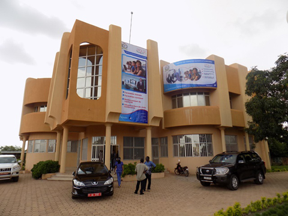

Historique
Université Joseph Ki-Zerbo (UJKZ)
L'Université Joseph Ki-Zerbo (UJKZ), anciennement Université de Ouagadougou, est la plus grande et la plus ancienne université publique du Burkina Faso.
Création et évolution
- 1965 : Création du Centre d'Enseignement Supérieur de Ouagadougou
- 1974 : Transformation en Université de Ouagadougou
- 2000 : Réforme universitaire et restructuration
- 2015 : Renommée Université Joseph Ki-Zerbo en hommage au grand historien et homme politique burkinabè
Mission
L'UJKZ a pour mission de :
- Assurer la formation initiale et continue dans les domaines scientifique, technique et culturel
- Développer la recherche scientifique et technologique
- Valoriser les résultats de la recherche
- Contribuer au développement économique, social et culturel du Burkina Faso

Chiffres clés
- Étudiants : Plus de 60 000
- Enseignants-chercheurs : Environ 800
- Personnel administratif : Plus de 500
- Unités de formation : 9 UFR et instituts
- Laboratoires de recherche : Plus de 30
Institut de Formation Ouverte A Distance (IFOAD)
L'Institut de Formation Ouverte A Distance (IFOAD) est une structure de l'Université Joseph Ki-Zerbo dédiée à l'enseignement à distance.
Création et développement
- 2010 : Création de l'IFOAD dans le cadre de la politique d'élargissement de l'accès à l'enseignement supérieur
- 2012 : Lancement des premières formations à distance
- 2015 : Développement de la plateforme d'apprentissage en ligne
- 2018 : Extension des formations et partenariats internationaux
- 2022 : Modernisation des infrastructures technologiques
Mission
L'IFOAD a pour mission de :
- Démocratiser l'accès à l'enseignement supérieur
- Offrir des formations de qualité à distance
- Développer des méthodes pédagogiques innovantes
- Former des professionnels adaptés aux besoins du marché du travail
- Promouvoir l'utilisation des TIC dans l'enseignement

Chiffres clés
- Étudiants : Plus de 2 000
- Enseignants : 50 permanents et vacataires
- Formations : Licence et Master
- Taux de réussite : 75%
- Partenaires internationaux : 15
Licence en Sciences Informatiques Appliquées (SIA)
La Licence en Sciences Informatiques Appliquées (SIA) est l'une des formations phares de l'IFOAD, créée pour répondre aux besoins croissants en compétences informatiques.
Historique de la formation
- 2012 : Création de la Licence SIA en présentiel
- 2014 : Adaptation de la formation pour l'enseignement à distance
- 2016 : Révision du programme pour l'adapter aux évolutions technologiques
- 2019 : Accréditation internationale de la formation
- 2023 : Nouvelle réforme du programme intégrant l'intelligence artificielle et la cybersécurité
Évolution et adaptations
Au fil des années, la Licence SIA a évolué pour s'adapter aux besoins du marché du travail et aux avancées technologiques :
- Intégration de nouvelles technologies (cloud computing, big data, IA)
- Renforcement des aspects pratiques et professionnalisants
- Développement des partenariats avec les entreprises
- Mise en place de stages obligatoires
- Internationalisation du programme

Réalisations
- Diplômés : Plus de 500 depuis la création
- Taux d'insertion : 85% dans les 6 mois
- Poursuite d'études : 40% en Master
- Projets étudiants : Plus de 100 réalisations
- Prix et distinctions : 12 récompenses nationales et internationales